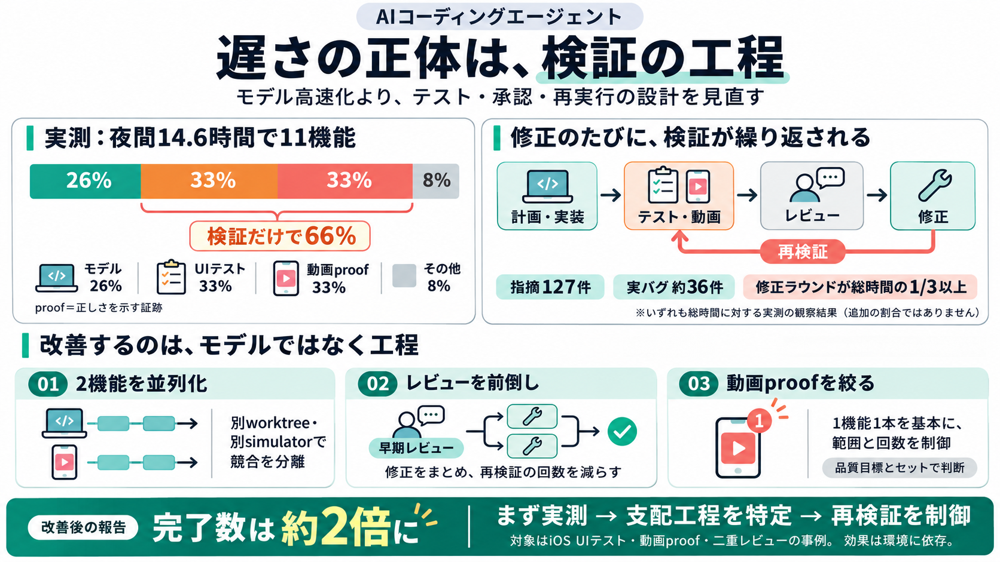

The Performance Blind Spot: AI Agents Write Slow Code
AI-generated code runs slow because LLMs are trained to optimize for correctness, not performance, and every standard qu…

AI-generated code runs slow because LLMs are trained to optimize for correctness, not performance, and every standard qu…
doing a lot of fanouts for deeper research or working on a lot of things in parallel, it is costing you way more tokens …
Purpose. Conductor is a macOS application that lets developers run multiple Claude Code and Codex agents in parallel. Ea…
I plan to write more as I figure out the ways of using them that are most effective. I encourage other practitioners to …
Is Claude Code still worth using? Yes — it solved 23/25 in our run, and its UX polish is real. The trade-offs are struct…